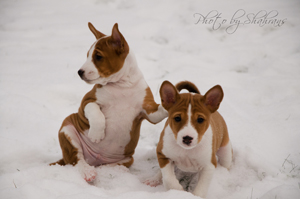

Jag har många intressen men ett som är betydligt större än de andra. Jag är hunduppfödare och föder framgångsrikt upp hundar av den väldigt speciella rasen Basenji, under kennelnamnet "Shahrans". Jag spenderar nästan all min tid med mina hundar och är ute och tävlar mycket. Föder även upp någon valpkull om året tillsammans med min mamma, exporterar de flesta valparna och importerar någon ny hund ibland. Just nu väntar jag på två stycken nya hundar, en Basenji från Australien och en Whippet från Frankrike.
Hundutställningar är förutom själva avelsbiten ett stort intresse hos mig!

Två av årets valpar! Ett av mina andra intressen är fotografering ;)